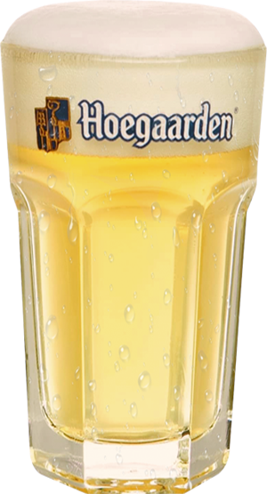
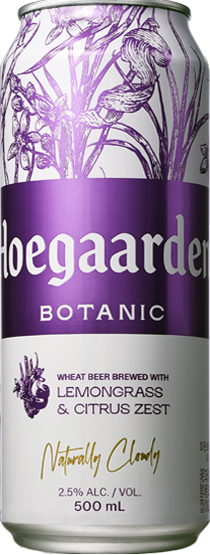
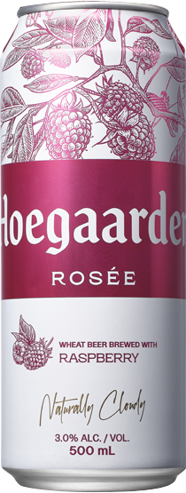
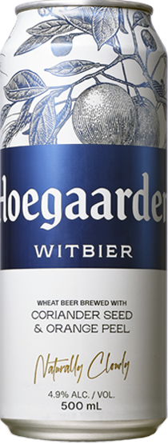

Beer

호가든을 가장 맛있게 즐기는 방법,
호가든 전용 육각잔
호가든 육각 전용잔은 입구가 넓은 파인트 형태로,
매혹적인 오렌지 향을 더욱 풍부하게 퍼지게 하고
풍성한 구름 거품을 유지시켜줍니다.
아래로 갈수록 두껍게 제작된 육각 글라스는
맥주의 시원함을 오랫동안 유지시켜
호가든을 더욱 풍미 있게 즐길 수 있습니다.
STEP1
호가든과
잔을 모두
냉장보관합니
STEP2
병/캔을 잔에
70% 가량
따릅니다
STEP3
병/캔을
돌리듯
흔듭니다.
STEP4
잔에 나머지
호가든을
채웁니다
Botanic

2.5% 낮은 도수의 허브향 맥주,
호가든 보타닉
🟣 종류 : Belgian White Ale(밀맥주) 🟣 ABV. : 2.5%
전세계 최초, 한국에서가장 먼저 출시하는 신제품
'호가든 보타닉 레몬그라스 & 시트러스 제스트'를 만나보세요.
레몬그라스와 시트러스 제스트 추출물의 조화로운 블랜딩으로
입안 가득 깔끔함과 산뜻함을 선사하는 가벼운 밀맥주.
친구들과의 편안한 만남, 혹은 나만의 여유를 즐기고 싶을 때
어울리는 상쾌한 맥주로, 낮은 도수와 향긋한 허브 향으로
부담없이 즐길 수 있습니다.
Rosee

오리지널 밀맥주와
달콤한 라즈베리의 만남,
호가든 로제
🔴종류 : Belgian White Ale(밀맥주) 🔴 ABV. : 3%
호가든 로제는 호가든 고유의 밀맥주에
라즈베리의 달콤함이 어우러진 핑크빛 맥주입니다.
유리잔 대신 과일잼 용기에 맥주를 담아 마셨다는
벨기에 전통 설화에 착안해 탄생된 맥주입니다.
3%의 낮은 알코올 도수로 언제 어디서든 가볍게 즐길 수 있고,
호가든 오리지널의 부드러운 맛과 라즈베리의
달콤한 풍미의 조화를 느껴보세요.
Witbier

정통 벨기에 밀맥주, 호가든
🔵 종류 : Belgian White Ale(밀맥주) 🔵 ABV. : 4.9%
호가든은 보리, 홉, 물만을 사용하는 독일의 ‘맥주순수령’과는 달리
약초, 허브, 과일 등을 사용해 다양한 맛의 맥주를 개발한
벨기에 사람들의 창의성과 오랜 정통 기법의 만남으로 탄생한 맥주.
호가든은 밀, 코리엔더 씨드, 오렌지 필을 사용해
매혹적이고 은은한 향이 특징이며,
특유의 부드럽고 풍성한 맛과 구름거품이 특징인 맥주입니다.
세계적인 맥주 품평회 ‘월드 비어컵 어워드 (World Beer Cup® Award)’
카테고리에서 총 9번 수상을 받은 세계적으로 인정받은 맥주.
(1996, 2002, 2004, 2006, 2008, 2016년 금상 수상)